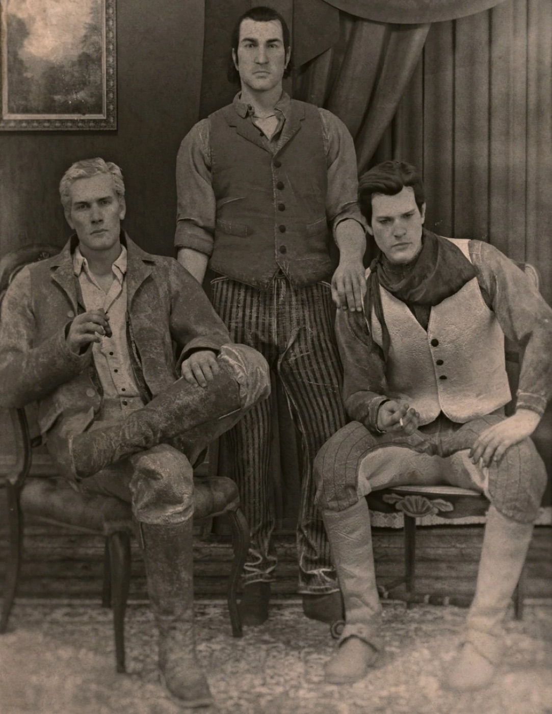
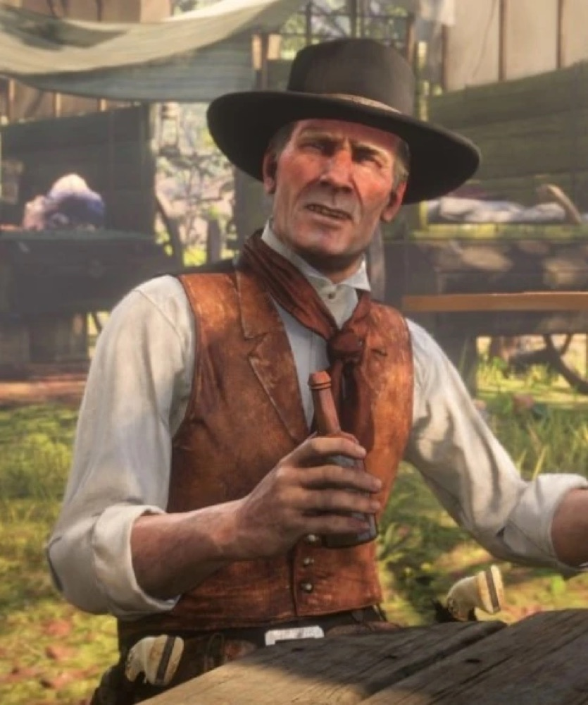

Personnage · Gang Van der Linde Hosea Matthews Mort en 1899 Décédé Cofondateur du gang Voix de Curzon Dobell Par Joseph Lambert · Mis à jour le 23 juin 2026 Hosea Matthews est le cofondateur du gang Van der Linde et, depuis plus de vingt ans, le plus proche ami, bras droit et conscience de Dutch van der Linde. Maître escroc et gentleman cambrioleur au verbe affûté, Hosea est le cerveau derrière les plus gros coups du gang, et la main calme qui tempère les pulsions les plus folles de Dutch. Avec Dutch, il a contribué à élever Arthur Morgan et John Marston, et sa sagesse posée est l'une des dernières choses qui tiennent le gang debout au début de 1899. Il a été interprété par Curzon Dobell. Mort1899 StatutDécédé NationalitéAméricaine AffiliationGang Van der Linde (cofondateur) RôleEscroc, planificateur, bras droit de Dutch Défunte épouseBessie Matthews JeuxRed Dead Redemption 2, Red Dead Online VoixCurzon Dobell Biographie De la scène à l'arnaque Hosea a d'abord rêvé d'une carrière d'acteur de théâtre avant de glisser vers la petite délinquance, où son talent de comédien a fait de lui un redoutable escroc. Lorsqu'il rencontre Dutch van der Linde, des décennies avant les événements de Red Dead Redemption 2, les deux hommes se reconnaissent comme des âmes sœurs et fondent ensemble le gang qui portera le nom de Dutch. Le cerveau du gang Pendant plus de vingt ans, Hosea fut le planificateur : celui qui repérait les cibles, montait les arnaques au long cours et désamorçait autant de bagarres que Dutch en provoquait. Lui et Dutch ont élevé une ribambelle d'orphelins et de hors-la-loi, dont un jeune Arthur Morgan et John Marston, faisant du gang une famille.  La vieille garde : Hosea et Dutch ont élevé Arthur ensemble. Bessie, et une vie presque vécue À une époque, Hosea a quitté la vie de hors-la-loi pour se ranger auprès d'une femme nommée Bessie, l'amour de sa vie. Tous deux se sont mariés et ont tenté de vivre honnêtement, mais après la mort de Bessie, un Hosea en deuil est revenu au gang pour de bon. Cette perte a laissé en lui une tristesse silencieuse qui ne l'a jamais vraiment quitté. 1899 : le début de la fin En 1899, Hosea vieillit et tombe malade, mais reste l'esprit le plus affûté du gang. À mesure que Dutch devient imprudent après Blackwater, les avertissements d'Hosea pèsent plus que jamais, et sont de moins en moins écoutés. Personnalité Là où Dutch inspire, Hosea raisonne. Chaleureux, spirituel et d'une perspicacité sans fin, il est le diplomate du gang et son ancrage moral, plus intéressé par les combines astucieuses que par le sang. Il traite Arthur et John comme des fils et parle franc quand les autres flattent. Sa tragédie est de voir venir la perte du gang sans pouvoir l'empêcher. Tant qu'Hosea est en vie, Dutch écoute ; une fois qu'il n'est plus là, il ne reste plus personne pour le faire. Relations Dutch van der Linde Son associé depuis plus de vingt ans, avec qui il a fondé le gang. Hosea est la seule voix que Dutch écoute vraiment, jusqu'à ce qu'il ne l'écoute plus. Arthur Morgan L'un des garçons que lui et Dutch ont élevés. Hosea est une véritable figure paternelle pour Arthur, et l'un des rares à gagner sa pleine confiance. John Marston Un autre de ses fils adoptifs, élevé dans le gang sous la patiente direction d'Hosea. Micah Bell Le nouveau venu dont Hosea se méfie ouvertement, y voyant à juste titre une influence déstabilisatrice sur Dutch. Bill Williamson L'un des hommes de main du gang, un instrument loyal quoique fruste que la planification d'Hosea garde pointé dans la bonne direction. Mort et destin Lors du braquage de la Lemoyne National Bank à Saint Denis, Hosea et Abigail sont chargés de créer une diversion. Le plan déraille : l'agent Pinkerton Andrew Milton capture Hosea et le traîne dans la rue alors que le casse vire à la fusillade. Dutch et les autres cloués à l'intérieur, Milton exécute Hosea de sang-froid, sous les yeux du gang, en guise d'avertissement. Sa mort brise le dernier garde-fou du gang et marque le véritable début de son effondrement. Pour Arthur en particulier, perdre Hosea, c'est perdre le seul homme qui aurait pu les mener tous en lieu sûr.  Hosea en des jours plus calmes, avant Saint Denis. Coulisses Hosea a été incarné par Curzon Dobell en voix et capture de mouvement. Son jeu chaleureux et tout en vécu fait d'Hosea le véritable cœur du gang, ce qui explique précisément pourquoi sa mort frappe si fort. Hosea fait office de voix de la raison du récit : encore et encore, les dangers qu'il pressent et que Dutch ignore lui donnent raison, de sorte que sa disparition retire le seul contrepoids à la dérive de Dutch. Accueil et héritage Hosea est l'un des personnages secondaires les plus aimés de Red Dead Redemption 2, souvent salué pour sa chaleur, son esprit et la tragédie discrète de son arc. Dans l'histoire, il est le grand « et si » : l'homme qui, s'il avait vécu, aurait peut-être ramené le gang du bord du gouffre. Son absence hante tout ce qui suit. Anecdotes Hosea et Dutch étaient associés depuis plus de vingt ans au moment de Red Dead Redemption 2. Il a un temps quitté le gang pour vivre honnêtement avec son épouse Bessie, n'y revenant qu'après la mort de celle-ci. C'est l'un des meilleurs escrocs du gang, préférant la ruse et la planification à la violence. Sa mort à la banque de Saint Denis est l'un des grands tournants de l'histoire. Galerie Les fondateurs et leur protégé. Hosea Matthews au camp.